Welcome to Heartly – Heartly WordPress Theme Documentation.
- Item Name : Heartly - Fundraising & Charity WordPress Theme
- Created: 03 March 2026
- Item Version : v 1.0
- Author : Gramentheme - Portfolio
First of all, Thank you so much for purchasing this template and for being my loyal customer. You are awesome! You are entitled to get free lifetime updates to this product + exceptional support from the author directly.
This documentation is to help you regarding each step of customization. Please go through the documentation carefully to understand how this template is made and how to edit this properly.
Theme Requirements
To use Heartly, make sure your hosting provider is running the following software:
- WordPress 4.8 or higher.
- PHP 5.6 or greater. WordPress officially suggests to use PHP 7.4.
- MySQL 5.6 or greater.
Recommended PHP Limits
Many issues that you may run into such as: white screen, demo content fails when importing, empty page content and other similar issues are all related to low PHP configuration limits. The solution is to increase the PHP limits. You can do this on your own, or contact your web host and ask them to increase those limits to a minimum as follows:
max_execution_time 180memory_limit 128Mpost_max_size 64Mupload_max_filesize 32Mmax_input_time = 60max_input_vars = 3000
Also consider upgrading your PHP version to the latest version, the newer the better.
WordPress Information
To install this theme you must have a working version of WordPress already installed. If you need help installing WordPress, follow the instructions in WordPress Codex or you can watch the. Below are ll the useful links for WordPress information.
- WordPress Codex – general info about WordPress and how to install on your server
- First Steps With WordPress – general information that covers a wide variety of topics
- FAQ New To WordPress – the most popular FAQ’s regarding WordPress
What's included
When you purchase our theme from Themeforest, you need to download the Heartlyfiles from your Themeforest account. Navigate to your downloads tab on Themeforest and find Heartly. Click the download button to see the two options. The Main Files contain everything, the Installable WordPress Theme is just the installable WordPress theme file. Below is a full list of everything that is included when you download the main files, along with a brief description of each item.
-
Installable WordPress file only. You can upload this file when you install the theme.
-
All files and documentation (full zip folder). You will need to extract and locate the installable WordPress file to upload when you install the theme.
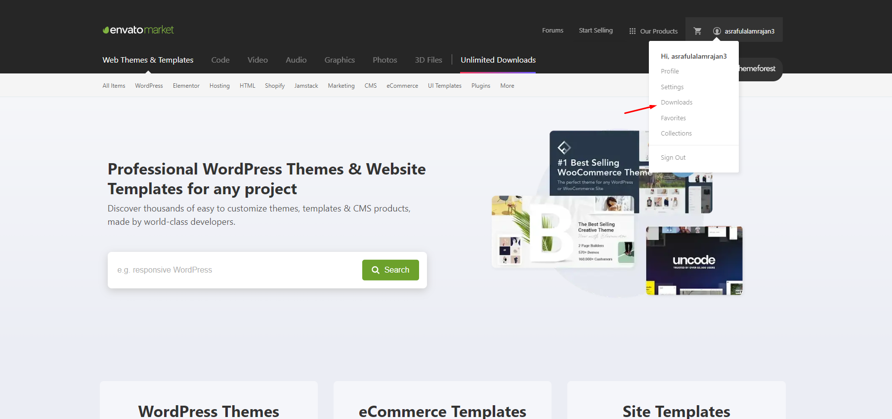
Theme Installation
It’s easy to install Heartly. Just follow these steps, they won’t take much of your time.
- Download the theme zip file from your Envato account from ThemeForest.
- **All files & documentation **(full zip folder). You will need to
extract and locate the
installable WordPress file to upload when installing theme
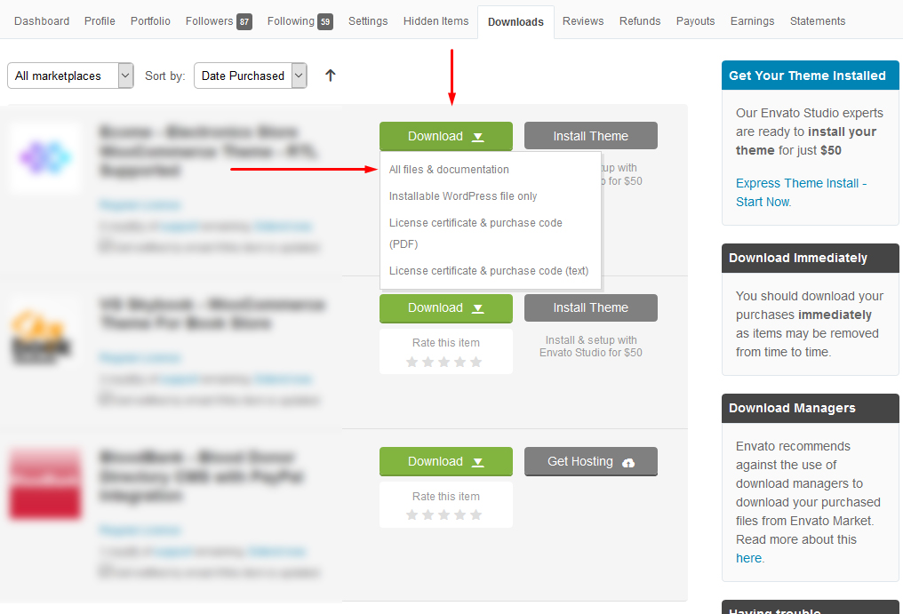
- Log in to your WordPress Dashboard (Ex: http://yourwebsite.com/wp-admin).
- Navigate to Appearance > Themes.

-
Click on Add New and then Click on
Upload Theme .

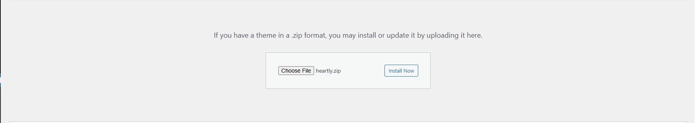
- Click Add New, then click Upload Theme >
Choose File
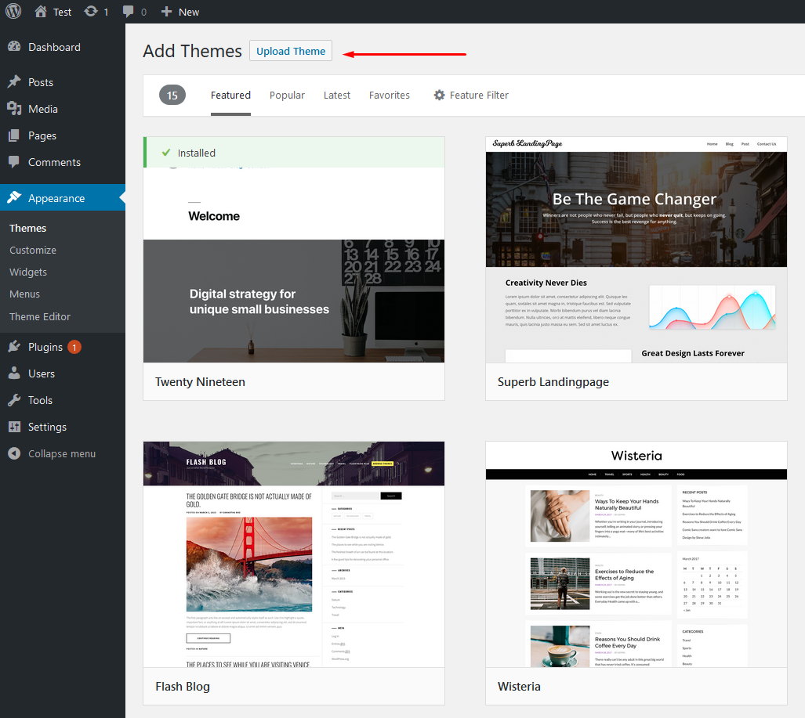
- Navigate to the .zip file on your computer, then click Install Now
- When the installation complete, click Activate. You will be
redirected to Themes page with Heartlyactivated.
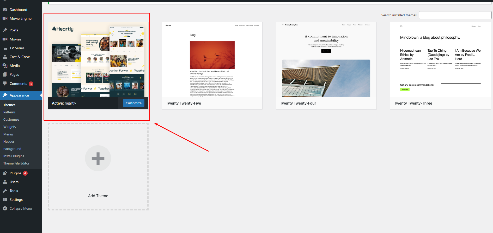
- Done.
Install theme via FTP
To manually upload your new WordPress theme, login with your credentials to your website and locate the wp-content folder in your WordPress install files. Upload the un-zipped 'heartly' folder into the: wp-content/themes folder.
Once uploaded, activate the theme by heading to the “Themes” menu in the WordPress Dashboard. Locate the Heartly theme and hit “Activate”.
The theme files will be stored on your server in the
wp-content/themes/ location.
Note: When uploading your theme with the installer, please ensure you are uploading the theme .zip file, not the entire package you downloaded. In this case, you will be uploading Heartly.zip.
Plugin Installation
After activating Heartly, you will see this notice:

Click Begin installing plugins. You will be navigated to Install Required Plugins page.
Simply check all of them (or all of required plugins and some recommended plugins you like) and from the drop down select Install, then hit Apply.
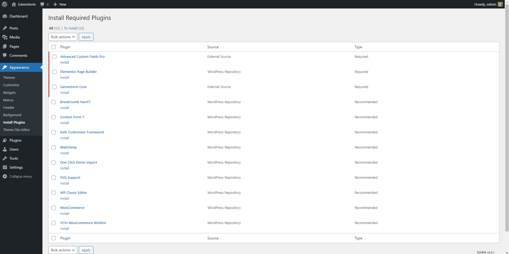
When finishing, it should look like this:
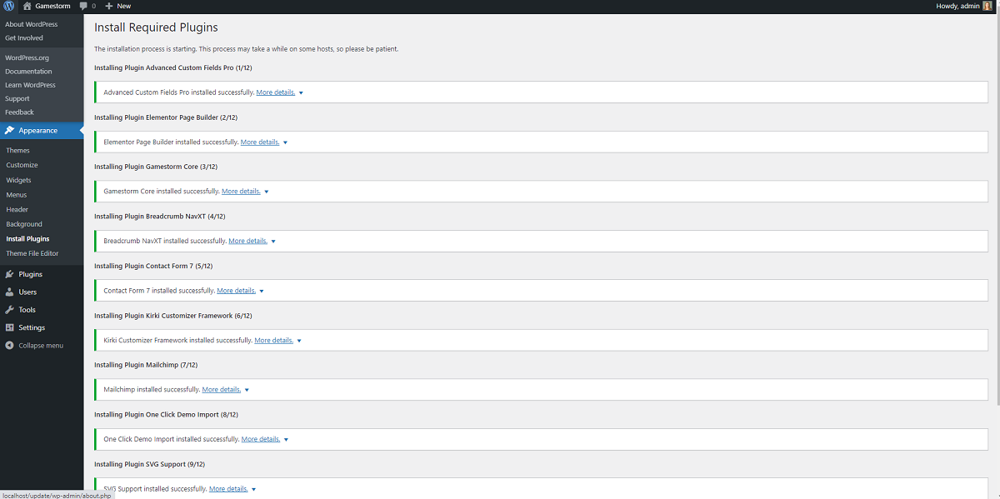
Demo Installation
Our demo data import lets you have the whole data package in minutes, delivering all kinds of essential things quickly and simply. All you need to do is to navigate to Appearance >Import. Hit Import this demo.
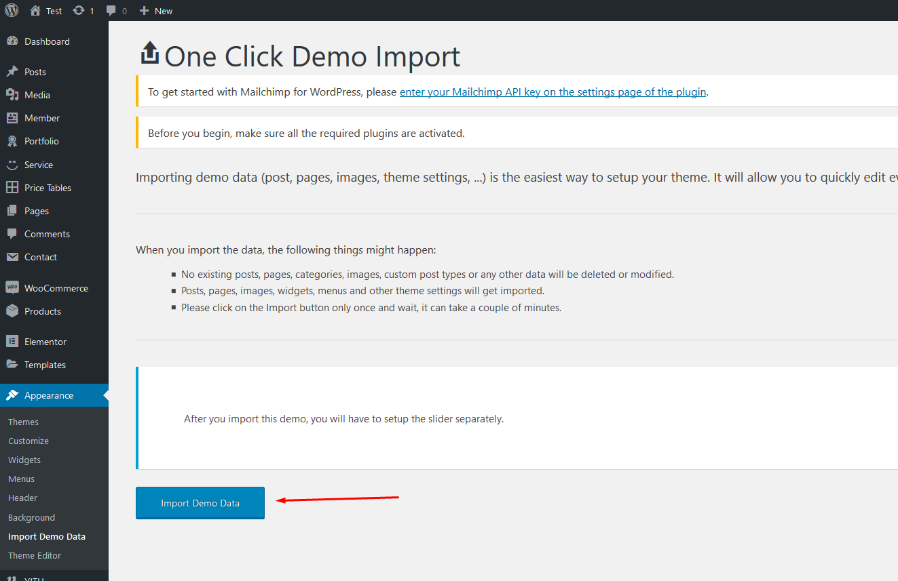
Have a cup of coffee. The process is within minutes.
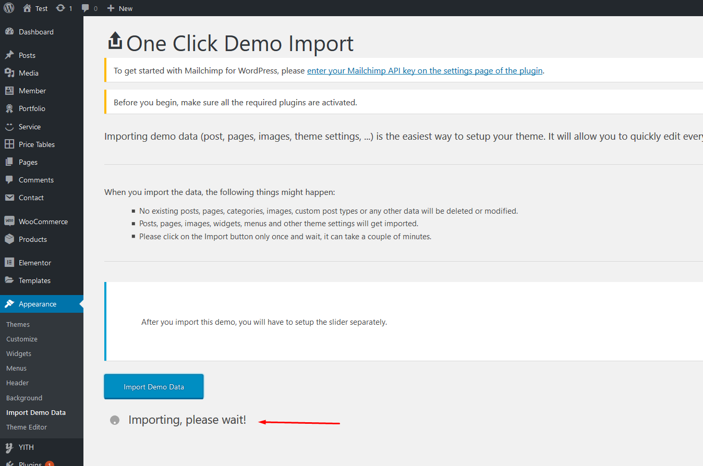
When finishing, it should look like this:

Go to Setting > Reading > Front page displays and choose the page you like to be your front page then hit Save changes.
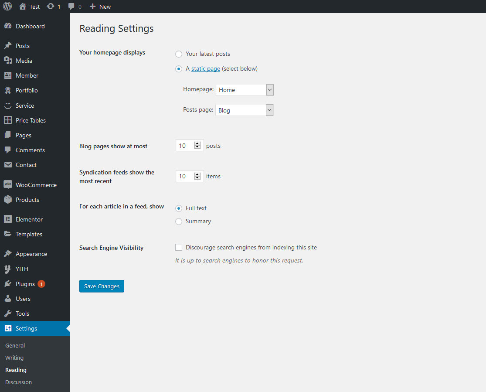
Free Support System
All of Gramentheme’s items
come with
6 months of included support and free lifetime updates for your Theme.
Once the 6 months of included support is up, you have the opportunity to extend support
coverage up to 6
or 12 months further.
If you choose to not extend your support, you will still be able to submit bug reports
via
email or item
comments and still have access to our online documentation knowledge base and video
tutorials.
We have an advanced, secure ticket system to handle your requests. Support is limited to questions regarding the theme’s features or issues that are related the theme. We are not able to provide support for code customizations or third-party plugins. If you need help with anything other than minor customization of your theme, we suggest enlisting the help of a developer.
Our Support Mail
All of our items come with free support, and we have a dedicated mail: hi.pixelone@gmail.com to handle your requests. Support is limited to questions regarding the theme’s features or problems with the theme. We are not able to provide support for code customizations or third-party plugins. If you need help with anything other than minor customizations of your theme then you should enlist the help of a developer.
Item Support Includes
- Answering questions about how to use the item
- Answering technical questions about the item
- Help with defects in the item
- Item updates to ensure ongoing compatibility and to resolve security vulnerabilities
Not Included in Item Support
- Theme customization and requests that require or involve custom coding
- Installation of the item
- Hosting, server environment, or software
- Support for compatibility with 3rd party plug-ins
- Support for out-dated or modified themes
For more information on Item Support Policy please refer to the original document..
Use Elementor Page Builder to Build Page
First go to Elementor > Settings and make sure Elementor is active for the post types you want to edit.

Step 1: Choose Edit With Elementor to edit your page.

How to Create a New Post
Step 1: Navigate to Posts > Add New in your WordPress admin sidebar.
Step 2: Create a title, and insert your post content in the editing field.
Step 3: For a video/audio post, just simply paste the video/audio URL into the Embed Code field.
Step 4: Add Categories from the right side. Categories is meta information you create for the post. Each category is a meta link that your viewer can click to view similar type of posts. To assign it to the post, check the box next to the Category name. You can also access and edit Categories from the Post sidebar item in your WordPress admin sidebar.
Step 5: Add Tags from the right side. Tags is meta information you create for the post. Each tag is a link that your viewer can click to view similar type of posts. Type the name of the tag in the field, separate multiple tags with commas. You can also access and edit Tags from the Post sidebar item in your WordPress admin sidebar.
Step 6: For a single image, click the first Featured Image Box, select an image and click the Set Featured Image button.
Step 7: You can also customize Page Title & Sidebar Options in Settings.
Step 8: Once you are finished, click Publish to save the post.
Here is the screenshot that shows the various areas of the blog post page:

How to Create a Category
Step 1: Post >> Categories
Step 2: Name the category and fill to other section below.
Step 3: Hit Add New Category. Your new Category will appear in the table of all category immediately.

Similar to Category, you can create a new Tag in the same way.
Theme Option Panel
If you want to change the general Options of the Theme, go to your WordPress Admin Dashboard Area to Theme Panel. Here you have a tabbed Navigation where you can change a lot of Options of your new Theme:
- General Settings
- Sidebars
- Back to Top Button
- Styling Settings
- Typography settings
- Responsive Typography
- Page Preloader
- Header Settings
- Footer Settings
- Contact Settings
- Blog Settings
- Shop Settings
- Import / Export
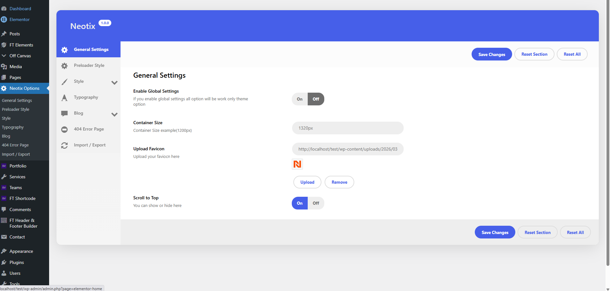
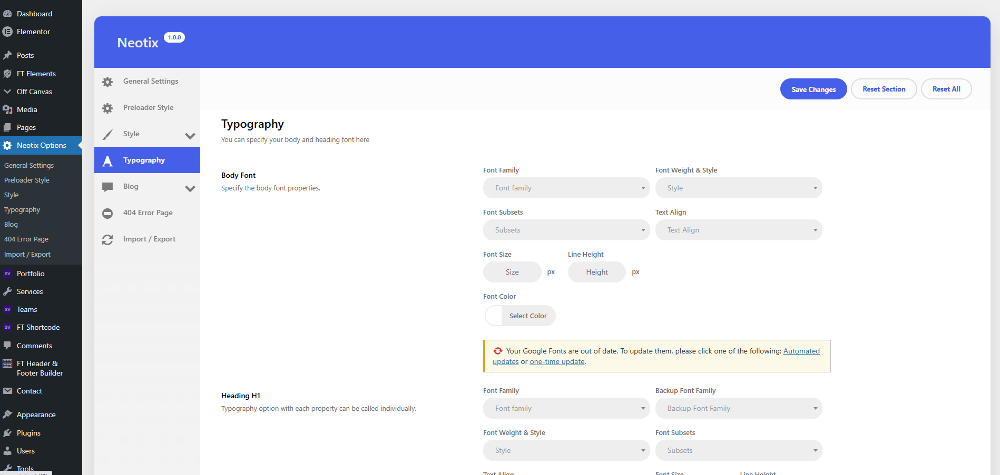
Elementor Widget
To use Elementor, you click the Edit with Elementor button

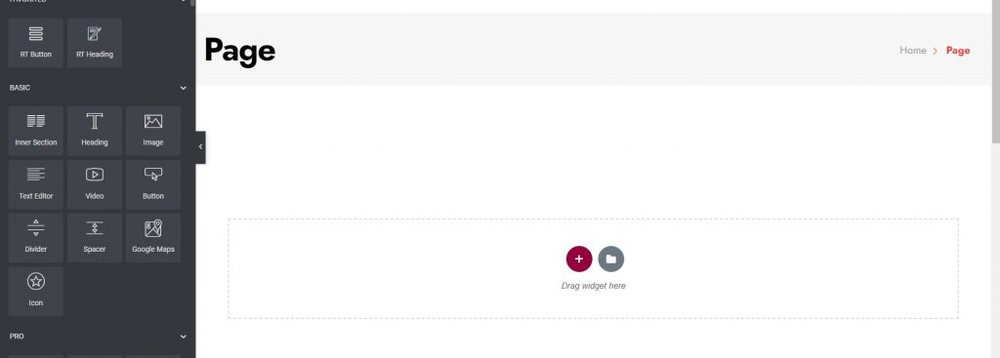
GiveWP Donation Plugin Integration
The Heartly theme is integrated with the GiveWP donation plugin. GiveWP handles the full donation process (amount, payment, donor details), while the theme displays donation forms inside cause details and homepage sections.
Install & Activate GiveWP
- Navigate to Plugins > Add New.
- Search for GiveWP – Donation Plugin.
- Click Install and then Activate.
- Optionally follow the GiveWP setup wizard or configure later in Donations > Settings.
Create Donation Forms (Causes)
- Go to Donations > Add Form.
- Enter a Form Title (for example: “Clean Water for All”).
- Set donation amounts, goals and other options as you need.
- Publish the form.
Each form has its own shortcode (for example:
[give_form id="123"]) and its own form URL.
Use GiveWP in Cause Details
In this theme, single cause pages can display the GiveWP form using the form shortcode. You can do this in two common ways (depending on how you set up your site):
- Using the content editor – edit your cause page and paste the
GiveWP shortcode (for example
[give_form id="123"]) into the content where you want the donation form to appear. - Using a dedicated shortcode / form field – if your cause layout has a “Donation Shortcode”, “Give Form ID” or similar field, paste the shortcode or only the numeric form ID there and update the cause. The theme will render the donation form in the predefined donation area of the cause details template.
Donation Links in Homepage Sections
The homepage sections (for example causes or call-to-action blocks) usually include button/link options for donations. You can connect them to GiveWP in two ways:
- Link to GiveWP form page – copy the form URL from Donations > All Forms and paste it into the “Donation Button Link” or similar field in your homepage section or theme options. The “Donate Now” button will open the GiveWP form page.
- Show the form directly – if a homepage widget/section supports shortcodes, paste the GiveWP shortcode there to render the donation form directly on the homepage.
Styling & Tips
- GiveWP includes its own basic styles. Additional styling comes from the Heartly theme stylesheet.
- If you need custom styling, add CSS in Appearance > Customize > Additional CSS or your child theme.
- After connecting your forms to cause pages and homepage sections, always perform a test donation to make sure the full donation flow works correctly.
Thank you for use this theme.
Once again, thank you so much for purchasing this theme. As I said at the beginning, I'd be glad to help you if you have any questions relating to this theme. No guarantees, but I'll do my best to assist. If you have a more general question relating to the themes on ThemeForest, you might consider visiting the forums and asking your question in the "Item Discussion" section.